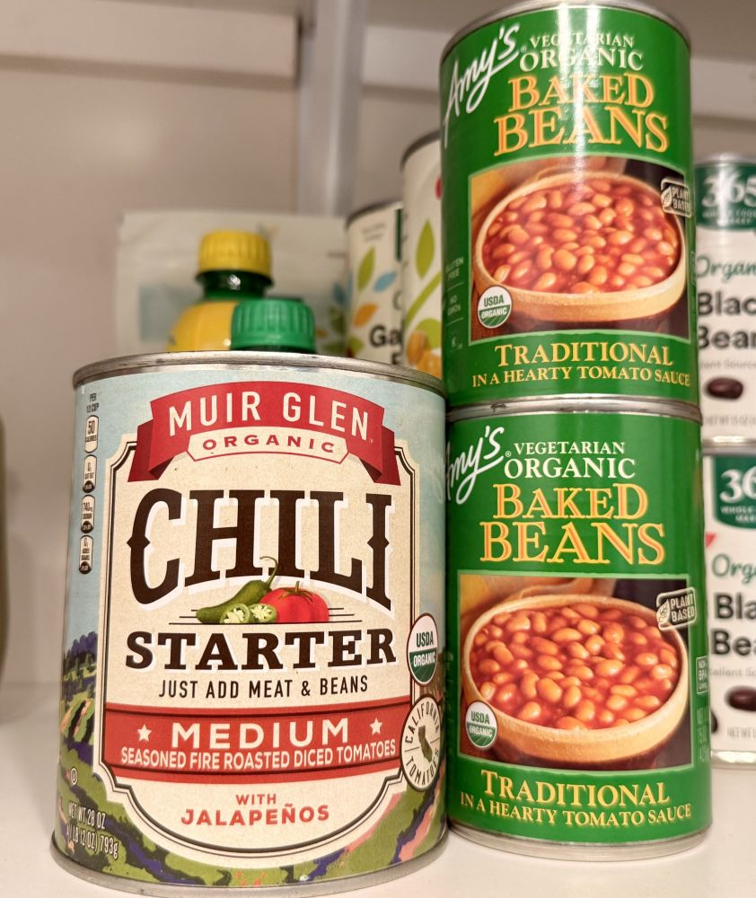
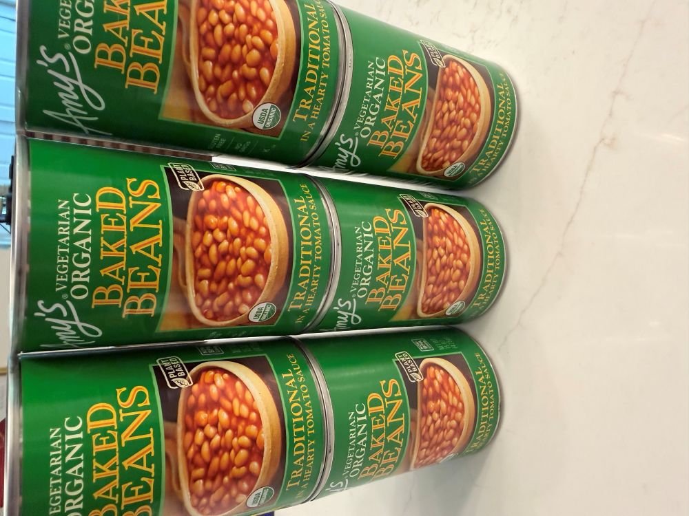
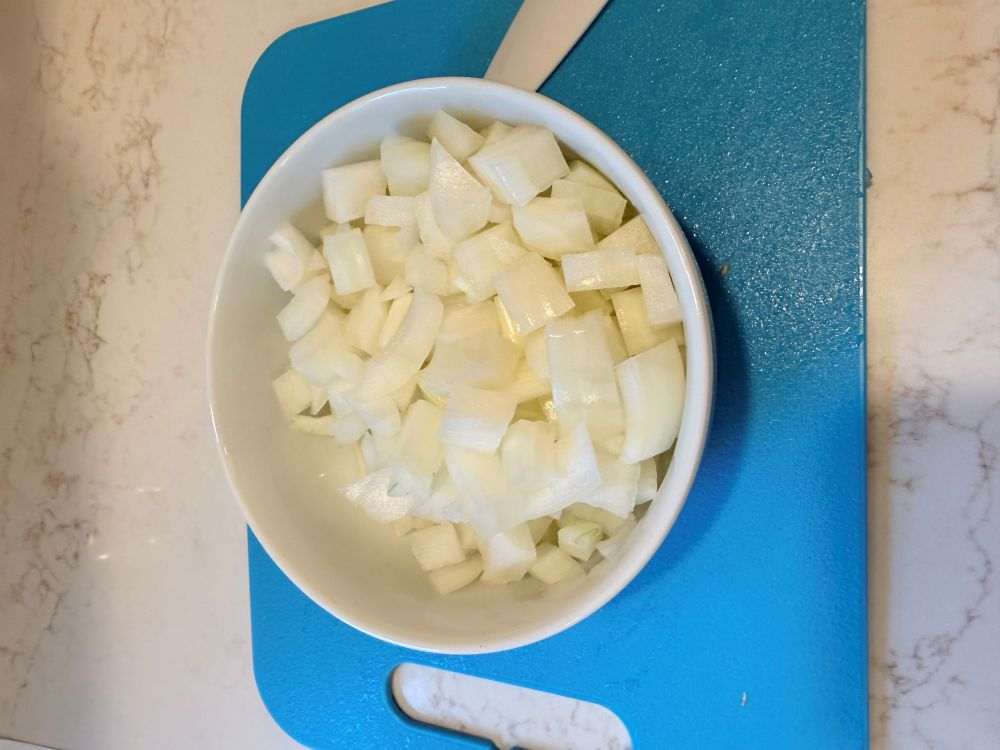
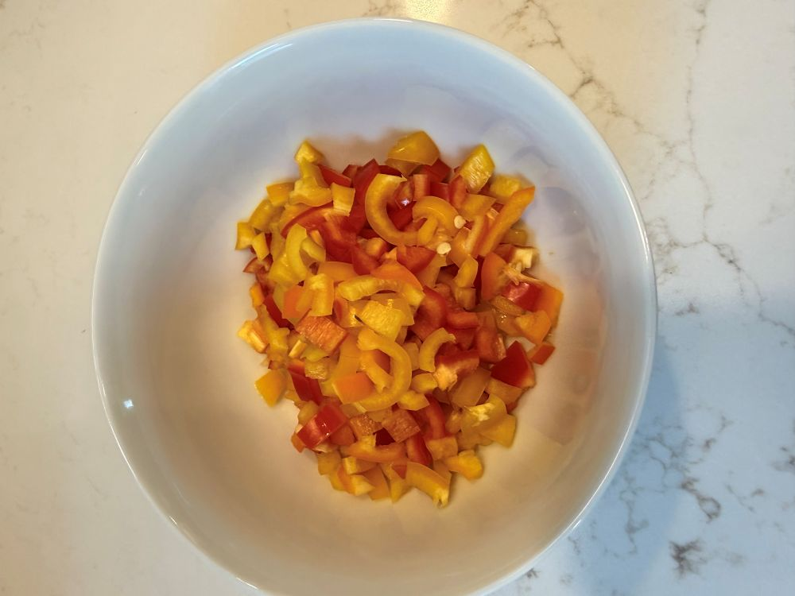
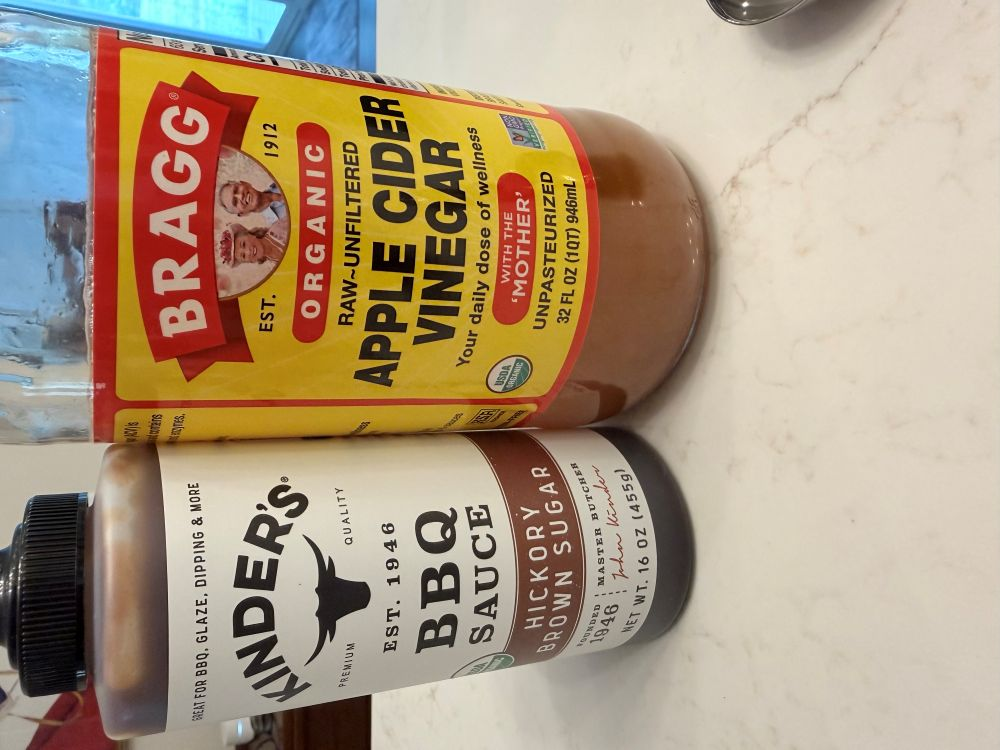
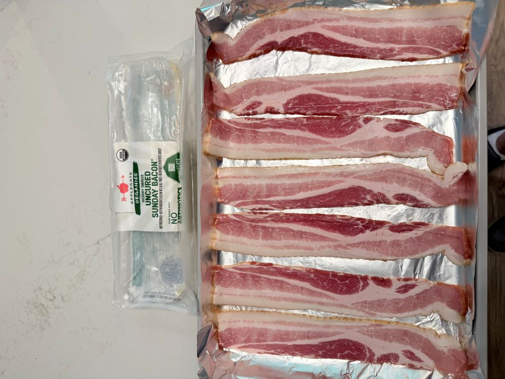
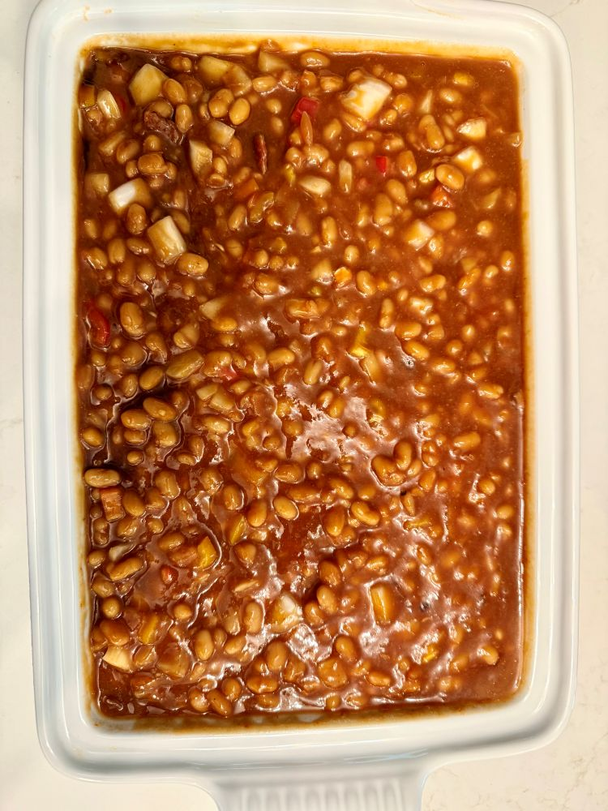

Some baked beans politely sit on the side of the plate. These baked beans kick the door in, introduce themselves loudly, and immediately become everyone’s favorite. This dish is perfect for cookouts, holidays, or any moment when you want to show up with a side that quietly steals the spotlight. They’re easy, they’re bold, and they get better the next day.
Ingredients

|
 The base: Organic baked beans |
 Freshly chopped sweet onion |
|
 Bright red and yellow bell peppers |
 The dynamic tang: BBQ sauce & ACV |
- 1 pkg organic bacon (cooked at 350°F, then chopped)
- 1 medium sweet onion, diced
- 1 red pepper, diced
- 1 yellow pepper, diced
- 3 cans (28 oz each) Amy’s Organic Baked Beans
- 3/4 cup Kinder’s BBQ sauce (or your favorite)
- 1/2 cup organic brown sugar
- 1/4 cup apple cider vinegar
- 2 tbsp Dijon mustard
Method
1. Bacon First
- Cook your bacon at 350°F until crispy and perfect.
- Let it cool, then chop it into bite‑sized happiness. Try not to eat half of it. (Or do. You’re the chef.)

2. Build the Base
- In a large Dutch oven or deep skillet, heat over medium heat.
- Sauté the diced sweet onion, red pepper, and yellow pepper until softened and smelling like the beginning of something wonderful.
3. Add the Beans
- Pour in all three cans of Amy’s Organic Baked Beans directly into the pot.
- Stir until everything looks cozy and united.
4. Make Them Banging
- Add the BBQ sauce, brown sugar, apple cider vinegar, and Dijon mustard.
- Stir until glossy, saucy, and slightly dramatic — the way baked beans should be.
5. Bring in the Bacon
- Fold in the chopped bacon like you’re tucking it into bed.
- Let the mixture simmer on low for 20–25 minutes, stirring occasionally, until thickened and irresistible.
6. Taste & Adjust
- Give it a final test before serving: More sweetness? Add brown sugar. More tang? A splash of vinegar. More swagger? Extra BBQ sauce. Make them yours.
7. Serve Proudly
- These beans belong next to burgers, ribs, grilled chicken, or honestly… a spoon. They’re crowd‑pleasing, nap‑inducing, and guaranteed to get you invited back.

Notes
Leftovers with Confidence: They get even better the next day as the flavors deepen in the fridge. If someone says, “These are the best baked beans I’ve ever had,” just smile and say, “They’re banging for a reason.”
Add some drama: Toss in a generous pinch of red pepper flakes or a few dashes of hot sauce if your crowd likes a little extra kick.